4. User Interfaces
Links to Subchapters
As described, the C15 provides two different user interfaces. The Hardware User Interface consists of both Base Unit and Panel Unit, providing haptic („hands on“) control.
The Graphical User Interface is available on external devices via Wi-Fi connection and provides a detailed parameter and preset representation. Multiple devices can be connected in parallel, each focussing on different aspects.

The following chapters explain how to focus on items and their aspects for further editing.
4.1 Selection
The C15 architecture was designed to offer quick access to all items and aspects, providing one central area representing the current focus. This main principle (of focussing on one item at a time for further editing) affects each interaction on any available user interface. As mentioned, the current focus will be shared with all involved devices.
Selection [Panel Unit]

Parameter Panels provide Parameter Selection Buttons. A lit LED indicates the current focus.

Multiple parameters can be provided by one Parameter Selection Button (indicated by circles below the LED).
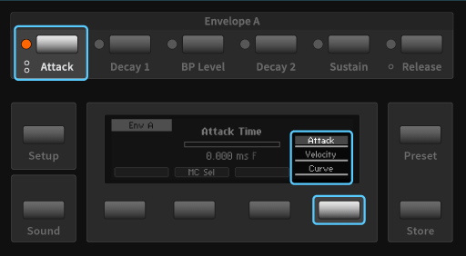The Parameter Selection Button or Soft Button 4 will cycle through the stack.
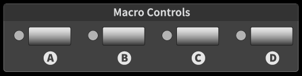Macro Controls appear as a distinct group and can be selected. Pressing a Selection Button twice will redirect to the Hardware Sources.

The Panel Unit Display will provide a corresponding screen for the selected item. Buttons of the Edit Panel provide access to all item aspects.
Selection [Graphical UI]

All parameters are shown in the main area and can be selected by clicking.

A highlighted element background indicates the current selection. The mouse wheel or pinch gestures on the main area background will zoom into the provided map. On different zoom levels, different details emerge. High priority parameters are always visible.

Macro Controls and Hardware Sources appear as separate groups in the main area, providing all related aspects.
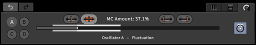The expandable tab area shows and provides all item-related aspects. Parameter edits can be realized in the Parameter tab.
The chapters 4.2 to 4.6 refer to a selected parameter- or preset-related item. Further (menu-related) items and access to them will be explained in the chapters 4.7 to 4.15.
4.2 Editing a Parameter
Adjust Control Position, coarse [Base Unit]

The Mode button can put Ribbon 1 in Edit mode. Display and touch strip of Ribbon 1 will represent the currently selected parameter, while Ribbon 2 still operates in Play mode.
Adjust Control Position, coarse [Panel Unit]

Use the Encoder to adjust the currently selected parameter. The Dec and Inc buttons can be used for stepwise adjustments.
Adjust Control Position, coarse [Graphical UI]

If the external device features a mouse or touch display, use drag gestures to adjust the currently selected parameter. (Use the Parameter tab slider or main area element, if GUI settings allow for it.)

If the external device features a keyboard, K and M keys can be used for stepwise adjustments (K for incremental, M for decremental adjustments)

If the external device features a mouse, the mouse wheel can also be used for adjustments when hovering over the slider in the Parameter tab.
Adjust Control Position, fine [Panel Unit]

The Fine button toggles high resolution mode for adjustments. An "F" indicator will appear in the Parameter screen. Usually, the Fine mode will be deactivated when focussing on another parameter. However, the Fine mode can be toggled permanently as well by holding the Shift key while pressing the Fine button. Now, the Fine mode remains activated until the Fine button is pressed again.
Adjust Control Position, fine [Graphical UI]

While holding down the Shift key, parameter adjustments will be made in high resolution mode.

On the slider in the Parameter tab, a pinch gesture (holding one finger while dragging another) will allow for adjustments in high resolution.
Reset Control Position [Panel Unit]

Press the Default button to recall the parameter’s default value.
Reset Control Position [Graphical UI]
Double click on element in the main area (if GUI settings allow for it) or the slider in the Parameter tab in order to recall the currently selected parameter’s default value.
Control Position Edges [Panel Unit]

Hold the Shift button and press Dec button for minimal, Inc button for maximal value.
4.3 Editing the Modulation of a Parameter
Focus on Modulation Aspects [Panel Unit]
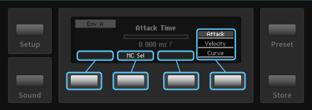By default, the parameter's control position is in focus and Soft Button 4 can be used to cycle through the stack if there is one. Soft Button 2 can be used to make a Macro Control assignment to the parameter. If a Macro Control is assigned, Soft Buttons 1 and 3 are also available. When focussing on a modulation aspect, Soft Button 4 is also available in order to access every modulation aspect. Furthermore, the Panel Unit Display now shows all modulation aspects. Pressing Soft Button 1, 2 or 3 twice will set the focus back to the parameter's control position.
Focus on Modulation Aspects [Graphical UI]
In the Parameter tab, the modulation icon can be clicked in order to toggle the focus on modulation aspects (if a Macro Control is assigned, all aspects are available). The horizontal slider represents the aspect in focus (or the control position by default). Elements in the main area and the selected parameter shown in the Parameter tab indicate their modulation aspects.
In chapter 4.4 Macro Controls, the Fast Mapping method is explained. It provides a quick way of assigning target parameters to a Macro Control.
MC Selector [Panel Unit]
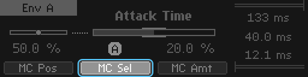Press Soft Button 2 in order to focus on MC selector and change the assignment like adjusting a parameter. Either none (-) or Macro Control (A, B, C, D) can be assigned.
MC Selector [Graphical UI]

Change the current MC assignment by pressing any of the four provided assignment icons (A, B, C, D). Clicking twice on an icon will clear the assignment. This aspect will not be in focus on the slider.
MC Position [Panel Unit]

Press Soft Button 1 in order to focus on MC position and adjust it like a parameter.
MC Position [Graphical UI]
Click on the MC position icon in order to focus on MC position and adjust it like a parameter on the slider.
MC Amount [Panel Unit]

Press Soft Button 3 in order to focus on MC amount and adjust it like a parameter. The modulation range will be indicated separately, next to the slider.
MC Amount [Graphical UI]
Click on MC amount icon in order to focus on MC amount and adjust it like a parameter on the slider. The modulation range will be indicated separately, next to the slider and on the main area element.
Modulation Range Aspects [Panel Unit]

Pressing Soft Button 4 moves the focus to the rightmost stack of modulation range aspects and cycles it. The selected aspect can be adjusted like a parameter. Provided aspects are the modulation range upper limit, the (current) control position and the modulation range lower limit. When either the upper or lower limit exceed the parameter range, clipping is indicated by an exclamation mark.
Modulation Range Aspects [Graphical UI]
Click on MC Lower Limit or MC Upper Limit icon in order to focus on modulation range aspect and change it like adjusting a parameter. The control position is in focus when no aspect is selected. When either the upper or lower limit exceed the parameter range, clipping is indicated by an exclamation mark.
4.4 Macro Controls
The most common practice of using Macro Controls would be the modulation mechanism during user performance, accessible via the Hardware Sources.
4.4.1 Editing a Macro Control
Ribbons in Play Mode [Base Unit]

In Play mode, Ribbons assigned to Macro Controls will be operable. Use the Mode button to switch modes.
Adjust Macro Control Position [Base Unit]

In Edit mode, Ribbon 1 can be used to edit the selected Macro Control. Use Mode button to switch modes.
Adjust Macro Control Position [Panel Unit]

Adjust selected Macro Control position like adjusting a parameter.
Adjust Macro Control Position [Graphical UI]

In the Parameter tab, all parameter aspects of the selected Macro Control are provided. Adjust Macro Control position like a parameter.
Fast Mapping [Panel Unit]

When the Selection Button of a potential target parameter is pressed while the Selection Button of a Macro Control is held, the assignment can easily be switched on or off. This only works for target parameters on top of the stack.
This method only handles the actual mapping of target parameters to a Macro Control. Modulation amounts have to be adjusted by focussing on each parameter. However, the modulation amounts are preserved and will recall the last value they were adjusted to.
4.4.2 Macro Control Properties
Focus on Macro Control Properties [Panel Unit]

Press the Edit button in order to focus on properties, provided by a stack on the right. The stack can be cycled with Soft Button 4. When pressing the Enter button, the selected property will be available in focus.
Focus on Macro Control Properties [Graphical UI]

In the Parameter tab, a menu icon can be clicked. In the main area, a right click on a Macro Control element will also invoke a context menu providing access to Macro Control properties.
Rename and edit Macro Control Info [Panel Unit]
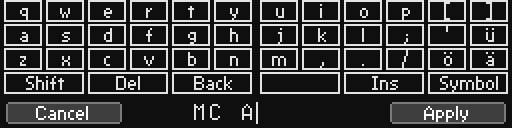The Rename screen provides a mechanism in order to edit the label or info text of a selected Macro Control. Soft Button 1 cancels the process, Soft Button 4 confirms and applies the process.
(See chapter 4.10 The Rename Mechanism for further details)
Rename and edit Macro Control Info [Graphical UI]

A rename dialog appears and the label can be edited with mouse and keyboard.

The info window appears and the info text can be edited with mouse and keyboard.
„Mod Reset“ (clear Target Assignments)

Assignments to target parameters of a selected Macro Control will be reset.
Adjust Macro Control Smoothing Time
Not yet implemented.
4.4.3 Assigning a Macro Control to Hardware Sources
Focus on Assignment Aspects [Panel Unit]
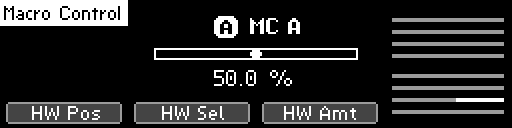By default, the Macro Control position is in focus. Soft Buttons 1 to 4 provide focus navigation, pressing a button twice will return to the default focus. One Hardware Source can be selected, and its effect on the Macro Control can be edited. When Ribbon 1 is in Edit mode, the selected aspect can be edited there as well (but selection is only available on the Panel Unit).
HW Source Position [Panel Unit]

Press Soft Button 1 in order to focus on the currently selected Hardware Source and adjust its position like a parameter.
HW Source Selector [Panel Unit]

Press Soft Button 2 in order to focus on the Hardware Source selector. One of the eight Hardware Sources can be selected by adjusting the selector like a parameter.
HW Source Amount [Panel Unit]

Press Soft Button 3 in order to focus on the amount of the currently selected Hardware Source on the selected Macro Control. Adjust the amount like a parameter.
HW Source Selection Stack [Panel Unit]

Pressing Soft Button 4 moves the focus to the rightmost stack of Hardware Sources and cycles it. The eight sliders indicate the amounts of each Hardware Source on the selected Macro Control. The selected element of the stack represents the corresponding amount an can be adjusted like a parameter.
Access to Assignment Aspects [Graphical UI]
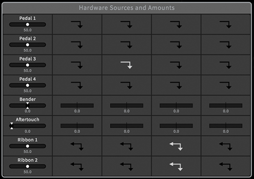The top-center parameter group „Hardware Sources and Amounts“ provides access to all Hardware Sources and their amounts on Macro Controls, represented as a modulation matrix. Items of interest can be selected and adjusted like a parameter.
4.5 Hardware Sources
The most common practice of using Hardware Sources would be the modulation mechanism during user performance, passing movements via Macro Controls to target parameters.
However, Hardware Sources are available and usable like ordinary parameters. Keep in mind that adjusting Hardware Sources will cause a modulation, potentially affecting Macro Controls and target parameters.
4.5.1 Editing a Hardware Source
Performance (direct Interaction) [Base Unit]
All four internal Hardware Sources and any connected external pedal are operable.
Adjust Hardware Source Position [Base Unit]

In Edit mode, Ribbon 1 can be used to edit the selected Hardware Source. Use the Mode button to switch modes.
Adjust Hardware Source Position [Panel Unit]

Adjust selected Hardware Source position like adjusting a parameter. Using a Hardware Source has the same effect as editing the value in the display.
Adjust Hardware Source Position [Graphical UI]
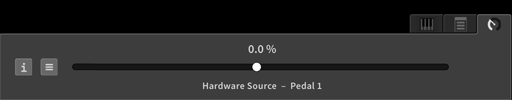In the Parameter tab, all parameter aspects of the selected Hardware Source are provided. Adjust the position like a parameter.
4.5.2 Hardware Source Properties
Focus on Hardware Source Properties [Panel Unit]

For pedals and ribbons, the return behavior can be edited. Pressing the Edit button when a Hardware Source is selected will redirect to the Edit screen. Use Soft Buttons to select one of the provided aspects.
Focus on Hardware Source Properties [Graphical UI]

In the main area, a right click on a Hardware Source element will invoke a context menu providing access to the properties.
Edit Return Behaviour [Panel Unit]

Edit the return behavior like adjusting a parameter. Returning behavior allows Hardware Source amounts to Macro Controls to be continuous.
Edit Return Behaviour [Graphical UI]

The context menu provides available return behaviors to select. Returning behavior allows Hardware Source amounts to Macro Controls to be continuous.
4.5.3 Mapping a Hardware Source to Macro Controls
Focus on Assignment Aspects [Panel Unit]

By default, the Hardware Source position is in focus. Soft Buttons 1 to 4 provide focus navigation, pressing a button twice will return to the default focus. One Hardware Source can be selected, and its effect on one Macro Control can be edited.
Macro Control Selector [Panel Unit]

Pressing Soft Button 2 will redirect to the currently associated Macro Control.
HW Source Amount [Panel Unit]

Pressing Soft Button 3 will redirect to the Hardware Amount screen, showing the amount of the currently selected Hardware Source on the currently associated Macro Control.

The amount can be edited like adjusting a parameter. Pressing Soft Button 1 will redirect to the Hardware Source, Soft Button 4 will redirect to the Macro Control.
MC Target Selection Stack [Panel Unit]

Pressing Soft Button 4 will cycle through the rightmost stack of Macro Controls in order to change the current association.
Focus on Assignment Aspects [Graphical UI]
The top-center parameter group „Hardware Sources and Amounts“ provides access to all Hardware Sources and their amounts on Macro Controls, represented as a modulation matrix. Items of interest can be selected and adjusted like a parameter.
4.6 Presets
4.6.1 Loading a Preset
Preset Navigation [Base Unit]

The Base Unit Control Panel can be set in Preset mode by the Mode button. Using + and – buttons will navigate through the current bank. Both ribbons will remain in Play mode.
Preset Navigation [Panel Unit]

Press the Preset button in order to focus on the Preset screen. The Encoder as well as the Inc and Dec buttons will navigate through the current Bank. Soft Buttons 2 and 3 navigate banks. The selection is indicated by a rectangle.
Preset Navigation [Graphical UI]

In the main area, every bank is available and can be dragged on any position. If expanded, presets can be selected by clicking.

In the Preset tab, the currently selected bank can be navigated by clicking on the corresponding navigation icons.
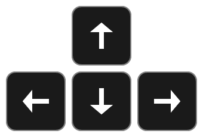The arrow keys can be used to navigate presets (up, down) and banks (left, right).
If the external device features a mouse, the mouse wheel can also be used for navigating the currently selected bank in the Preset tab when hovering it.
Loading a Preset [Base Unit]

On the Base Unit press the Funct button in order to load the selected preset.
Loading a Preset [Panel Unit]

On the Panel Unit press the Enter button in order to load the selected preset.
Loading a Preset [Graphical UI]
On the Graphical UI the Preset tab provides a Load icon in order to load the currently selected preset. Or click on a bank element twice.
Direct Load [Base Unit]

On the Base Unit hold the Funct button for a second to toggle the Direct Load option.
Direct Load [Panel Unit]

On the Panel Unit press the Soft Button 4 in order to toggle the Direct Load option.
Direct Load [Graphical UI]
On the Graphical UI press the Direct Load icon in the Preset tab in order to toggle the Direct Load option.
Bank Navigation [Base Unit]

On the Base Unit switch to Bank mode by the Mode button. Using the + and – buttons will navigate banks.
Bank Navigation [Panel Unit]

On the Panel Unit press Soft Button 1 in order to focus on banks and navigate them instead. Soft Buttons 2 and 3 will navigate presets now.
Bank Navigation [Graphical UI]
In the main area of the Graphical UI the bank selection updates when loading a preset. In the Preset tab, banks can be navigated by the corresponding navigation icons. (The arrow keys can be used as well, as described.) In the main area the bank selection updates when clicking/touching on a preset of a floating bank, loading the preset and its parent bank will be selected. A click or touch gesture on a floating bank header selects the bank as well and the last selected preset of this bank will be loaded.
The Direct Load option will be indicated on each interface and loads a selected preset directly. The Panel Unit Display and the Graphical User Interface also show the preset count of a selected bank (in brackets) and the current bank-preset-number.
4.6.2 Storing a Preset
Store Select [Panel Unit]

Press the Store button in order to focus on the Store screen and start the Store Select mode. The store position and bank can be adjusted by preset and bank navigation (as described in chapter 4.6.1). The process can be canceled by pressing the Store button again, pressing the Enter button on the other hand will complete the Store process, storing the preset at the desired location according to the Store method (see below).
Storing a Preset [Graphical UI]

The Preset tab provides a Store icon. Clicking on or touching it will store the preset in the currently selected bank at the current position, according to the Store method (see below). The additional Select button will start the Store Select mode and a bank and position can be chosen (without loading any preset), then the preset can be stored at the desired location (disabling the Store Select mode), according to the Store method (see below). Another way of storing a preset in a particular bank or position is simply dragging and dropping the Store icon to the desired location (the Store Select mode and Store method can be ignored in this case).
Store Method [Panel Unit]

Soft Button 4 provides three available Store methods in the rightmost stack and cycles it. Pressing the Enter button applies the process, pressing the Store button again dismisses it.
Store Method [Graphical UI]
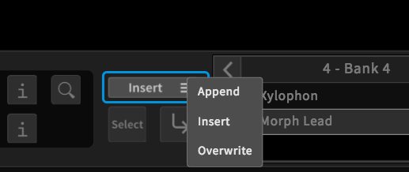The Store method can be selected in the Preset tab, above the store icon.
Preset Naming

If the preset is considered “new”, the Rename screen will appear, requesting a name for the preset.
Store Methods
The store position will be finally influenced by the chosen store method, which can be one of the following three:
| Append | The preset will be stored at the end of the currently selected bank. |
| Overwrite | The preset will be stored at the current position in the currently selected bank, overwriting the existing preset. |
| Insert | The preset will be stored behind the current position in the currently selected bank. |
4.6.3 Editing Presets and Banks
Common Preset editing actions are listed in the table below:
| Rename | The selected preset can be renamed (see chapter 4.10 The Rename Mechanism for details). |
| Cut | The selected preset will be moved into the clipboard (being deleted at the current position). |
| Copy | The selected preset(s) will be copied into the clipboard, ready to be pasted at any time. |
| Paste | Once a preset was copied or cut into the clipboard, this option will become available. The copied preset will be inserted behind the currently selected preset. |
| Delete | The selected preset(s) will be deleted from the bank. |
Preset Edit Mode [Panel Unit]

When the Preset screen is in focus, pressing the Edit button invokes a menu, represented in the rightmost stack. Cycle the stack by pressing Soft Button 4 in order to select a menu entry and press the Enter button in order to focus on an aspect. Press the Edit button again to return to the Preset screen.
Preset Context Menus [Graphical UI]
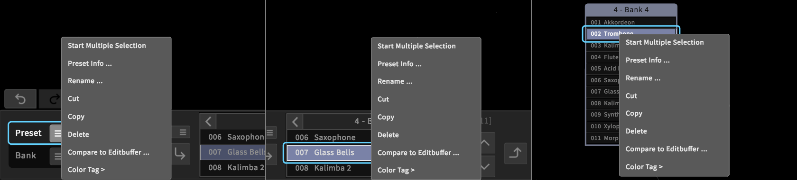In the Preset tab, a Preset menu button is provided. Clicking on this button or right-clicking (long touch gesture) on a preset element in a (floating) bank invokes the context menu, providing access to all aspects.
Common Bank editing actions are listed in the table below:
| New | A new bank will be created. |
| Rename | The selected bank can be renamed (see chapter 4.10 The Rename Mechanism for details). |
| Copy | The selected bank will be copied into a temporary buffer, ready to be pasted. |
| Paste | Once a bank was copied into the clipboard, this option will become available. ! The copied bank will be appended as a new bank. This mechanism is not fully developed yet. For more information, refer to the separate “Known Issues” document. |
| Delete | The selected bank will be deleted. |
| Move left/right | The bank number (position in the bank list, visible in the Preset screen and Preset tab) can be altered by moving it left (decreasing the position) or right (increasing the position). |
| Import/Export | Single Banks can be transferred from and to external devices (see chapter 4.6.4 Importing/Exporting Banks). for more details. |
The Graphical User Interface provides another way of moving a bank via the Bank Info window, where the bank number (position in the bank list) can be adjusted directly (see chapter 4.7 Contextual Info for more details.
Bank Edit Mode [Panel Unit]

When the Bank screen is in focus, pressing the Edit button invokes a menu, represented in the rightmost stack. Cycle the stack by pressing Soft Button 4 in order to select a menu entry and press the Enter button in order to focus on an aspect. Press the Edit button again to return to the Preset screen.
Bank Edit Mode [Graphical UI]

The Graphical User Interface provides two menus for editing banks. There is a global menu (invoked by a right-click / long touch gesture on the background) and a local menu for banks (provided by a bank menu icon in the Preset tab or by a right-click / long touch gesture on any bank header).
New Bank [Panel Unit]
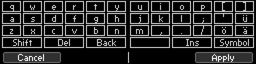A new, empty bank will be created and appended to the bank list after choosing a name in the Rename screen.
New Bank [Graphical UI]

A dialog appears, requesting a name for the new bank. After confirming, a new empty bank will be appended to the bank list.
Rename Bank [Panel Unit]

The Rename screen will appear, so the current bank name can be changed. (See chapter: 4.10 The Rename Mechanism for further details).
Rename Bank [Graphical UI]
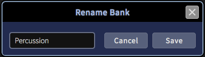The Rename screen will appear, so the current bank name can be changed. (See chapter: 4.10 The Rename Mechanism for further details).
4.6.4 Importing/Exporting Banks
The C15 provides two ways of transferring (importing, exporting) single banks in order to manage big preset collections.
When importing a bank, the bank will not be selected and no preset will be loaded.
Import and Export on USB Stick [Panel Unit]

When a USB stick is connected, the selected bank can be exported to it by using the Export option. Any bank present on the USB stick can be selected and imported by using the Import option.
Import and Export on External Device [Graphical UI]
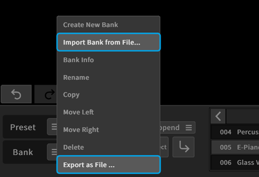The bank menu provides an option to save the current bank as a file, which will be downloaded on the external device. The menu also includes an option to import a particular bank from a file present on the external device, which can be selected and uploaded. Other Bank context menus (as explained in chapter 4.15 Graphical UI Functionality) will also offer import and export options.
4.6.5 Locking
In some situations, it may be useful to load only specific parts of a preset while leaving other parts as they are. This can be achieved by using the Lock mechanism, which can lock particular parameter groups and prevent the contained parameters from being overwritten by a preset recall or sound manipulations. Parameters of locked groups can still be edited, though.
Locking a Parameter Group [Panel Unit]
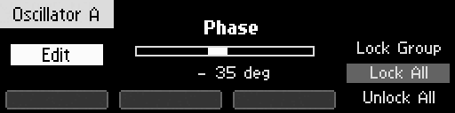In the Parameter screen showing the currently selected parameter, the Edit button provides the lock menu. Individual lock options can be selected by pressing Soft Button 4 and applied by pressing the Enter button.
 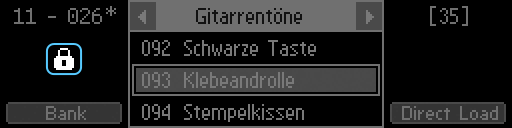
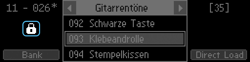

Depending on the lock status of the associated group, the lock options provide locking the specific group/all groups, or unlocking the specific group/all groups. When one or more groups are locked, the lock symbol is also shown in the Preset and Sound screens.
Locking a Parameter Group [Graphical UI]
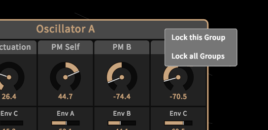A right click or long touch gesture on a particular group header invokes the lock menu. Depending on the lock status of the associated group, the lock options provide locking the specific group/all groups, or unlocking the specific group/all groups.

When one or more groups are locked, the lock symbol is also shown in the Preset and Sound tabs.

Note that Hardware Sources and Hardware Amounts are two separate lockable groups. In the Graphical User Interface, the header of the “Hardware Sources and Amounts” group shows two separate lock symbols.
Locking – a practical example:
Let’s consider a situation where the user wants to use certain groups of preset A as a template for other presets (B, C, ...), which shall have those group settings as well.
Useful scenarios may be the Hardware Sources and their Amounts on Macro Controls, or the whole effect chain. In a few steps, the particular groups of preset A can be copied to the other presets:
- Load preset A (the template preset).
- Activate lock on the desired groups (that shall be transferred to the other presets).
- Load preset B (the locked groups still remain as defined by preset A).
- Save preset B (making the template transfer persistent).
- Load and then save preset C (repeating the process, the locked groups still remain as defined by preset A), et cetera.
4.7 Contextual Info
Parameter Info [Panel Unit]

When a parameter is selected, the Info button invokes the Info screen, showing the current parameter’s description.
Parameter Info [Graphical UI]

In the Parameter tab, an Info icon is provided, toggling an Info window showing the description of the currently selected parameter. The window will update when selecting another parameter.
Macro Control Info [Panel Unit]

When a Macro Control is selected, the Info button invokes the Info screen, showing the description of the currently selected Macro Control. When pressing the Edit button, the user-definable info text can be edited in the Rename screen.
Macro Control Info [Graphical UI]
The Info icon in the Parameter tab works accordingly when selecting a Macro Control, context menus for the main area elements are also provided. The provided Info window allows for edits on the user-definable info text.
Hardware Source/Amount Info [Panel Unit]

When the focus is on a Hardware Source or on a Hardware Amount to a Macro Control, the Info button provides the Info screen according to the item in focus.
Hardware Source/Amount Info [Graphical UI]

The Info window will display the description of a selected Hardware Source or Amount as described for ordinary parameters.
Preset Info [Panel Unit]
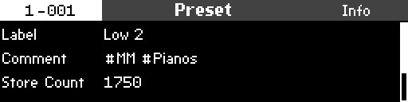Presets contain a collection of metadata, some of which can be edited. The metadata collection includes: a reference to the parent bank name, the preset position within the parent bank, the preset name, a comment text, a color tag and information about the last saved change (date, device name, ui version).
Preset Info [Graphical UI]

The Preset Info window can be made visible when clicking on the Preset Info icon in the Preset tab or by a right click on a preset within a bank, selecting the „show info“ option. The window can be left visible and will update when loading other presets. In addition, the global View menu also provides a visibility option for the Preset Info window.
In the Graphical User Interface, the Preset Info window allows for editing the preset number (position in the bank), name, comment and color tag.
Bank Info [Panel Unit]
Banks contain a collection of metadata, some of which can be edited. The metadata collection includes: the bank number (position in the bank list), the bank name, a comment text, the bank size (number of contained presets), a state (indicating if unsaved changes ocured since the last export) as well as information about the last change (date), import (date, filename) and export (date, filename).

When in the Bank screen (available when pressing Soft Button 1 while in the Preset Screen), the Info button invokes the Info screen for the currently selected bank. The screen can be scrolled by the Encoder or Inc, Dec buttons. When pressing the Edit button, the comment text can be edited in the Rename screen.
Bank Info [Graphical UI]

The bank info window can be made visible when clicking on the Bank Info icon in the Preset tab or by selecting „show info“ in the context menu provided by the bank menu icon or in other bank context menus. The window can be left visible and will update when selecting other banks. In addition, the global View menu also provides a visibility option for the Bank Info window.
In the Graphical User Interface, the Bank Info Window allows for editing the bank number (position in the bank list), name and comment text.
4.8 Overviews
There are different Overviews provided on the Panel Unit, enabling the user to quickly get an impression of the inner workings of a particular sound, just by a brief glance at the Parameter Panels. Without listening to the sound or studying parameter values, certain assumptions on signal flow and modulation assignments can be easily made.
Active Overview [Panel Unit]
At any time, when the Preset screen is in focus, active overview will be provided. Signal-flow related parameters that are not zero ('active') will have lit LEDs. See chapter 9. Parameter Reference and notice the "Active Indicator" symbol (4).
When Macro Controls are mapped to at least one parameter, they will show lit LEDs as well.
MC Target Overview [Panel Unit]

When a Macro Control is selected. all assigned target parameters will show their assignment by blinking LEDs.
MC Target Overview [Graphical UI]

When a Macro Control is selected, it will be surrounded by a red rectangle. All assigned target parameters show their assignment by surrounding red rectangles as well.
Signal Flow Overview [Panel Unit]

When selecting a parameter of a particular group, blinking LEDs on the Panel Unit show where the output signal of this group is applied further in the signal chain. (If, for example, a parameter of the Feedback Mixer is selected, the PM FB and FB Mix parameters of the Oscillators and Shapers will have blinking LEDs, if they are unequal to zero - indicating that the output signal of the Feedback Mixer is applied in these particular sections).
The Signal Flow indicator is optional and can be disabled in the Setup Menu. See chapter 6 Setup (C15 System Settings) for more details.
Changed Overview
When a previously loaded Preset has been edited, an asterisk (“*”) will be shown. It can refer to different elements, depending on the context.

On the Panel Unit, the Shift button can be used to overview or navigate to changed elements.
Presets
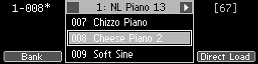As mentioned in chapter 3.5 Presets, the Preset screen will indicate changes (user edits) to a loaded preset by showing an asterisk behind the unique number. When changes occured to a loaded preset, holding the Shift button while in the Preset screen will show the Changed Overview on the Panel Unit, as changed parameters will now have blinking LEDs.
Graphical UI

In the Preset tab, an asterisk will be shown as well. For each changed parameter, an additional yellow frame will be shown. The highlighting can be disabled in the GUI Settings tab of the Setup dialog.
Parameters


When a changed parameter is selected and visible in the Parameter screen, an asterisk behind its label will be shown as well. Holding the Shift button now will redirect to the Compare screen, showing the loaded (original) and changed (edited) positions simultaneously. Both can be recalled by using Soft Buttons 2 and 3.
Graphical UI
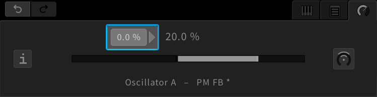When a changed parameter is selected and visible in the Preset tab, an asterisk behind its label will be shown as well. Furthermore, the previous state will be indicated left to the shown value. When selecting the previous state, it will be recalled.
Parameter Modulation Aspects


When the modulation aspects of a parameter have changed, an asterisk will be shown for each Soft Button label. When a particular modulation aspect is in focus, the Shift button can again be used to recall previous states. Soft Buttons 1, 2 and 3 can be used to recall previous states, as long as the Shift button remains pressed.
Graphical UI

When the modulation aspects of a parameter have changed, the modulation icon will appear with an additional yellow frame. After selecting the modulation icon, any changed modulation aspect will be shown with an additional yellow frame. Except for the Macro Control selector (just indicating the previous state), any particular aspect can be focussed by selecting the corresponding icon. With the aspect in focus, the previous state will be indicated left to the shown value. When selecting the previous state, it will be recalled.
Scale Overview [Panel Unit]
In order to quickly notice if any keys have an individual tuning (as controlled by the Scale Group Offset parameters), the Scale Group provides an Overview, showing if active (non-zero) offset parameters are present.

The active state is indicated by a highlighted bar for the Scale Group in the selection stack, and when the Scale Group is selected, a “Reset” option is provided by Soft Button 1, which will set all active Offset parameters to zero.
Scale Overview [Graphical UI]
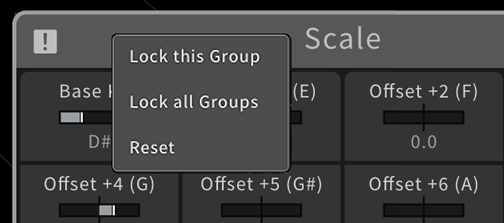The active state is indicated by an exclamation mark in the Scale Group header, and a “Reset” option is provided by the header context menu, which will set all active Offset parameters to zero.
4.9 The Undo Mechanism
Simple Undo/Redo [Panel Unit]


The current, active branch can be navigated by using the Undo and Redo buttons in the Edit Panel, recalling the corresponding state immediately.
When the Undo button was pressed, an Undo indicator will appear in the Preset screen, showing that the Redo option is available. The Parameter screen also shows the Undo indicator, as long as no other parameter is selected.
Simple Undo/Redo [Graphical UI]


The current, active branch can be navigated by using the Undo and Redo icons above the tab area, recalling the corresponding state immediately. The icons indicate which Undo options are available, as shown by their color. Alternatively, the usual keyboard shortcuts for undo and redo can be used.
Focus on Undo History [Panel Unit]

Pressing both Undo and Redo buttons at once will invoke the Undo screen, providing full navigation of the undo history.
Focus on Undo History [Graphical UI]

In the View menu, the undo history window can be shown or hidden.
It provides full access on undo-related aspects.
Navigate current Branch [Panel Unit]
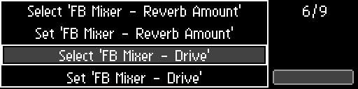
The Undo screen can only show one branch of the undo tree. It can be scrolled by using the Encoder or Inc, Dec buttons. The current position will be indicated by a rectangle and can be recalled by pressing the Enter button.
Navigate Branches [Panel Unit]

If a branch splits at the current position, pointy brackets are visible on the entry. Use the Soft Buttons 1 and 3 to switch between branches. Recalling an entry of an inactive branch will make it active.
Branch Navigation [Graphical UI]

The Undo History window can be scrolled by drag gestures on the background or the scrollbar, or by using the mouse wheel. A simple click on an element will recall the corresponding state. As all branches of the tree are visible in this window, the branch navigation is fully integrated. A right-click (or long touch gesture) on an element provides a context menu for further options. The „hide“ option will hide the selected branch, the other options follow below.
Delete (inactive) Branch [Panel Unit]

When navigating an inactive branch, press the Edit button in order to get the delete option. Pressing Soft Button 4 will delete the whole branch.
Delete (inactive) Branch [Graphical UI]
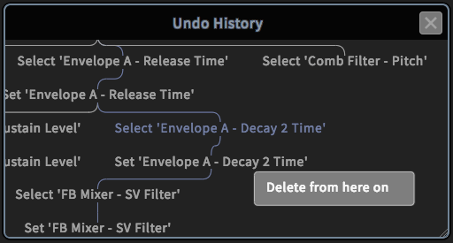When the selected element is on an inactive branch, the „delete from here on“ option will be provided. Confirming this option will delete the whole branch.
Make Element the new Root [Panel Unit]
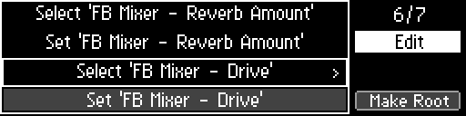When navigating the current, active branch, press the Edit button in order to get the „Make Root“ option. All entries and branches prior to the current position will be deleted by pressing Soft Button 4.
Make Element the new Root [Graphical UI]

When the selected element is on the current, active branch, the „Make this the new root“ option will be provided. Confirming this option will delete all entries and branches prior to the selected element.
4.10 The Rename Mechanism
Affected Items
Items that can be renamed are the labels and info texts of Macro Controls, as well as names and comment texts of presets and banks.
Get Rename Option [Panel Unit]
 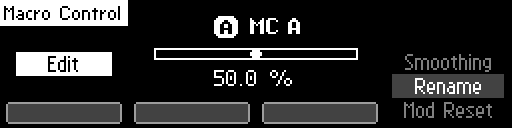
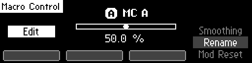
As previously described, renaming options will be provided when pressing the Edit button in the corresponding context.
Get Rename Option [Graphical UI]

As previously described, renaming options will be provided when invoking a context menu for corresponding items.
The Rename Screen [Panel Unit]

When the Rename screen is shown, the two Parameter Selection Panels on the left or on the right side of the display can be used as a keyboard, as indicated by the keyboard layout in the screen.
The cursor can be moved by using the Encoder, or the Inc, Dec buttons. Soft Button 1 will cancel the process, Soft Button 4 will apply the process.
Rename Dialogs [Graphical UI]

When a rename option was called, a dialog window will appear, containing an entry or textbox element. Mouse and keyboard on the external device can be used to rename the corresponding item. Dialogs provide OK and Cancel buttons in order to finish the process accordingly.
4.11 Sound Manipulation
The current setting can be further manipulated, affecting all parameters at once.
Focus on Sound Screen [Panel Unit]


Pressing the Sound button will invoke the Sound screen, providing options to further manipulate the current sound or sound transition.
Focus on Sound Tab [Graphical UI]

The Sound tab provides options to further manipulate the current sound or sound transition. It can be focussed by selecting the corresponding tab icon (showing a keyboard).
Init Sound [Panel Unit]

Press Soft Button 1 to select and then the Enter button to recall the Init sound. Every parameter will load its default value.
Init Sound [Graphical UI]

When clicking on the „Initialize Sound“ button, every parameter will load its default value.
Reset Init [Panel Unit]

Press the Edit button to invoke a menu stack on the right, navigate with Soft Button 4 and press Enter in order to reset the Init sound. The factory default settings will be restored to all parameter default values. The Init sound will not be loaded, though.
Reset Init [Graphical UI]

When clicking on the „Reset Init“ icon, the default value of every parameter will be reset to the factory settings.
Store Init [Panel Unit]

The menu stack also provides an option in order to store the current sound as the new default settings for all parameters.
Store Init [Graphical UI]

When clicking on the „Store Init“ icon, the default value of every parameter will be overwritten by the corresponding current value.
Randomize [Panel Unit]

Press Soft Button 2 in order to focus on the sound randomization. The amount of the randomization can be adjusted like editing a parameter. Press the Enter button in order to randomize all parameters.
Randomize [Graphical UI]

When clicking on the „Randomize Sound“ icon, all parameters will be randomized according to the randomization amount, shown below. Use drag gestures on the amount value in order to change the amount like adjusting a parameter.
Transition Time [Panel Unit]

Press Soft Button 3 in order to focus on the transition time and adjust it like editing a parameter. The transition time will be effective when recalling presets, defining the smoothing time of the parameters as they approach their new values.
Transition Time [Graphical UI]
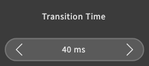Change the transition time by using drag gestures on the „Transition Time“ value, like adjusting a parameter. The transition time will be effective when recalling presets, defining the smoothing time of the parameters as they approach their new values.
Sound Manipulation and Locking [Panel Unit, Graphical UI]

As described in chapter 4.6.5 Locking, parameters of locked groups are not affected by sound manipulations. For example, randomizing all parameters may not be a good idea when considering the Master, Unison and Scale groups, as the random change can have too much of an impact, leading to unwanted, bad sounding or even harmful results (should the Master Volume increase considerably). So we recommend to lock these three groups before using the randomize function.
4.12 Setup Navigation
This section explains the navigation to and within the setup menu.
Refer to chapter 6 for a detailed reference.
Focus on Setup Menu [Panel Unit]

Press the Setup button in order to invoke the Setup screen. The menu content is organized in different levels which can be entered.
Scrolling [Panel Unit]
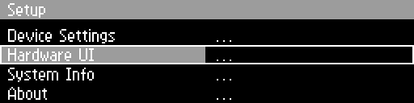Scroll the menu by using the Encoder or the Inc, Dec buttons. The position will be indicated by a highlighted background.
Enter a Submenu/Property [Panel Unit]

Press the Enter button or Soft Buttons 3 or 4 in order to enter a submenu or a menu property, according to the current position.
Adjust a Property [Panel Unit]
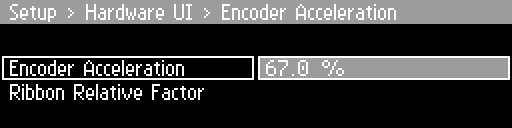When focussing on a property, adjustments can be done like editing a parameter, by using the Encoder or the Inc, Dec buttons.
Escape a Submenu/Property [Panel Unit]

Soft Buttons 1 and 2 can be used to navigate back to the next higher level. When a property is in focus, the Enter button has the same effect.
Setup Window [Graphical UI]

The topright View menu provides the „Show/Hide Setup“ option, toggling the visibility of the Setup window. The menu content is organized in tabs which can be focussed. In each tab, the corresponding properties are provided and can be adjusted (some properties have context menus, some can be adjusted by drag gestures, like a parameter).
4.13 Backups
As previously mentioned, single banks can be imported and exported from and to either a connected USB stick or the connected external device. In addition, the transfer of all banks at once is also provided, which allows for fast and easy backups.
Saving and Restoring Backups on USB Stick [Panel Unit only]
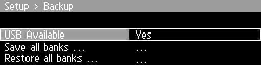In the Setup menu of the Hardware User Interface, the Backup submenu can be found, providing a Restore and a Save option. When a USB stick is connected, pressing the Enter button will allow for exporting or restoring of backups.
Saving and Restoring Backups on External Device [Graphical UI only]
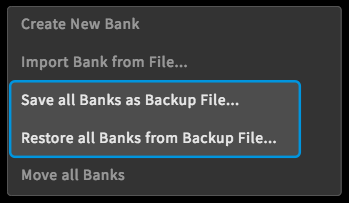The Background menu of the Graphical User Interface provides options for saving and restoring backups. When „Save all Banks as Backup File“ is selected, all banks will be copied into a single file which then will be downloaded on the external device. When „Restore all Banks from Backup File“ is selected, a backup file present on the external device can be chosen and uploaded. You will find the downloaded file at a location depending on your browser settings.
Please keep in mind that when restoring from a backup file, all banks currently present on the C15 will be lost. We recommend to save a backup file before restoring in order to maintain all preset data.
4.14 Base Unit Functionality
Here is a quick recap of the Base Unit functionality, compiling all available features into a single overview.

The Mode button cycles four distinct operation modes, which are explained in the following. The functionality of the remaining buttons depends on the current mode.
The following illustration shows how to navigate between the different modes:
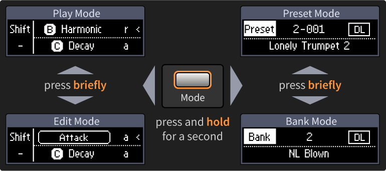
In Play mode, both Ribbons function as ordinary Hardware Sources. If they are assigned to a Macro Control, they will be operable. The +/- buttons can be used for transposing the whole instrument (Note Shift). Pressing a single button will perform an octave shift, pressing one button while holding the other will perform a semitone shift. The Funct button switches between absolute and relative behavior for the most recently used Ribbon (indicated by a pointy bracket).

In Edit mode, Ribbon 1 will operate as an additional parameter editor for the currently selected parameter. The remaining functionality remains as described for the Play mode.

In Bank mode, both Ribbons remain operable as Hardware Sources. The +/- buttons can be used to navigate banks.The Funct button will serve as a Direct Load switch (when held for a second). The last selected preset of the corresponding bank will be loaded.
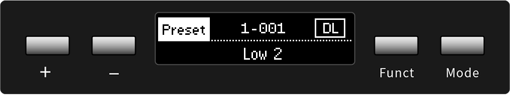In Preset mode, both Ribbons remain operable as Hardware Sources. The +/- buttons can be used to navigate presets. The Funct button will serve as a Load button (when pressed) or as a Direct Load switch (when held for a second).
4.15 Graphical UI Functionality
There are some more features of the Graphical User Interface, which are not available on both Base and Panel unit. Other features are available on both User Interfaces, but are organized in different ways.
Preset Search
 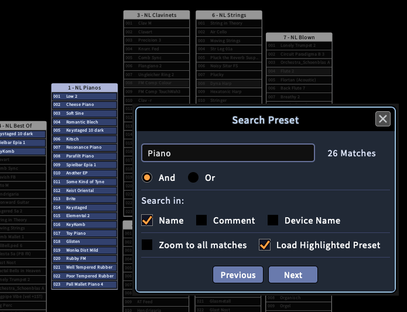
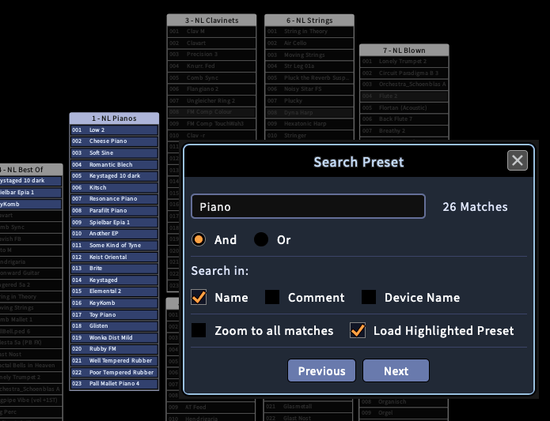
All available presets can be searched for keywords, the search results will be highlighted until the search is canceled. Search keywords can be logically combined by setting the logical operator (AND: every keyword has to match, OR: any keyword that matches).
The search algorithm can further be specified to include preset names, preset comments and the device names where presets originated from (as the selectable options show in the Search window).
The “Zoom to all matches” option will set the zoom level of the main area, so that every match is instantly visible.
The "Load Highlighted Preset" option enables the "Previous" and "Next" buttons to cycle through each Preset of the search result. The currently loaded Preset has a strong highlighting.
The success of a search strongly depends on the level of documentation (meaningful preset names and descriptive comments). Bank information (comments) are not included in the search. Using hashtags for specific keywords can be a sophisticated method of preset search and documentation.
Preset Drag and Drop
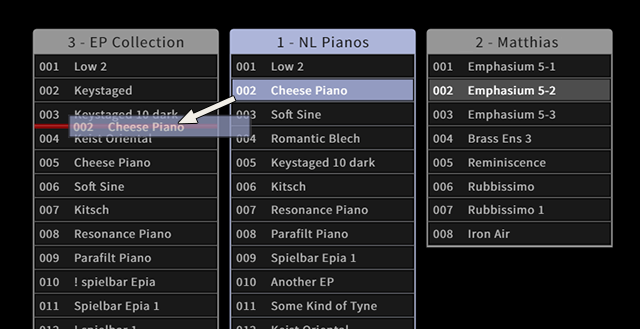A selected preset can be dragged on other positions in a bank, into other banks or on the background. When it is dropped, it will move to the new position (if the bank remains the same), or it will be copied to the new position (creating a new bank if it was dropped on the background).
If a preset is dropped directly on another preset (as indicated by a red background), the other preset will be replaced. In a similar manner, banks can be dragged as well in order to change their position in the main area, or to copy their contents into other banks.
Multiple Preset Selection

Bank context menus (invoked by a right click or long touch gesture on a bank in the main area) provide an option to start and finish the selection of multiple presets. Alternatively, the Shift key can be used to hold the Multiple Selection mode.
During multiple selection, presets of any bank can be added or removed from the selection (but they will not be loaded). All selected presets can then be deleted or copied (see context menu), or dragged into any bank at any position or on the background, creating a new bank containing copies of the selected presets.
The selection of multiple presets can be finished in the context menu or by a click on the background.
Note that preset drag and drop and multiple preset selection are only available, if the GUI Settings (explained in the following) allow for context menus and drag and drop.
Preset Compare
Two presets can be compared against each other, examining their individual differences. This may be useful for distinguishing several versions of a preset that are only slightly different. Two compare methods are available, as shown in the following:

By using the multiple preset selection mechanism and selecting two presets, a context menu entry "Compare ..." will be available when right-clicking on the selection. The two presets will be compared against each other.

A right-click on any preset will provide a "Compare to Editbuffer ..." option. The preset will be compared to a copy of the Editbuffer (the current parameter settings).

When starting the compare mechanism by either method, the Compare window will appear, showing every parameter or aspect that differs between the two presets. Equal parameters or aspects are not visible. Any of the two presets can be loaded, as provided by a Load icon in the header section of the window (so, both Presets can be tested and played without closing the Compare window).
When comparing a preset to the Editbuffer, subsequent adjustments to parameters that change the Editbuffer will not be recognized by the Compare window automatically. The Refresh button can be used in order to get a new copy of the current Editbuffer, ensuring that the comparison is up-to-date.
Move all Banks

There is a shortcut to move all banks at the same time, provided by the global context menu (invoked by a right-click or long touch gesture on the background). If the „Move all Banks“ option is selected, a white rectangle will appear, surrounding all banks. Drag gestures now allow for moving all banks to another place in the main area. To stop, re-select the option or click on the background.
Minimize Banks

The local bank context menu provides an option to minimize a bank. A double click on a bank header has the same effect. When a bank is minimized, it will consume only a small space, but still provides access to all contained presets (the access is only sequential, though).
Docking Banks
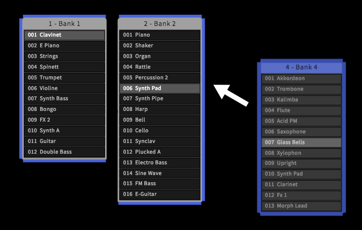When dragging banks manually to certain positions in the main area, they might not align very well. In order to create an alignment, a bank can be docked to another by dragging it close to other banks. The bank outlines change, indicating possible docking targets (top, right, bottom, left) for the dragged bank. When banks are docked together, they also behave as a group that can be dragged as a whole or docked to larger bank clusters. The top- or leftmost bank of a cluster behaves as the master and will move the whole cluster when dragging it, while the other banks can be dragged away from the cluster in order to split the group back into individual parts. Furthermore, when dragging a single bank between two banks of a cluster, it can be inserted as well.
Sort Bank Numbers

The background context menu provides an option to sort the bank numbers. This will re-evaluate their order in the bank list, which is available by sequential access in the Preset screen or tab. The new order will be affected by clusters (which will be evaluated first), and the bank positions on the main area or within a cluster (from upper left to lower right).
The View Menu

The View menu (available in the top-right corner, indicated by a menu icon) provides quick access to crucial components of the Graphical User Interface. The following components can be made visible or invisible (GUI shortcuts to the components are shown as well):
Setup
When clicking this option, the Setup menu opens in a new window. For more information about the Setup menu, refer to chapter 6.
Preset Search
As described, presets can be searched for keywords. Click on this option to start a search task, opening the Search window.
Undo History
All user actions are tracked and can be undone, as provided by Undo and Redo icons above the Preset tab. In order to have a complete overview or browse through the history, the Undo History window can be used, showing all tracked actions in a tree-like structure.
Preset Info
Every preset contains metadata, such as a comment text or the creation date, for example. All the preset-relevant information is provided by the Preset Info window.
Bank Info
Similarly, banks also contain metadata which will be provided by the Bank Info window.
Parameter Info
In addition, specific parameter information will be provided by the Parameter Info window.
Presets
All the floating banks in the main area can also be shown or hidden, shifting the focus to the parameters. Nevertheless, all banks still are available in the Preset tab.
Parameter Editor
All parameters in the main area can also be shown or hidden, shifting the focus to presets and banks. The Parameter tab still provides the opportunity to edit a selected parameter. However, parameters cannot be selected anymore (the Hardware User Interface still provides complete access).
Open Help
The C15 User Manual is also available as a separate HTML document, which will open in a new browser tab.
Open MC View

The MC View is an experimental feature which allows for a more dynamic, screen-based interaction with Macro Controls. By clicking on this menu option, a separate browser tab will be opened, providing two XY controls and two large sliders, representing the Macro Controls. Their positions are following mouse or touch gestures with a smoothed speed. At the left edge, the settings can be accessed. They contain:
- the amount of additional smoothing
- an option to assign MC and to the second XY field or to the two horizontal sliders.
Context Menus
There are several context menus available providing different functionalities (according to the context). They all can be closed by pressing the Escape key.
Background Context Menu
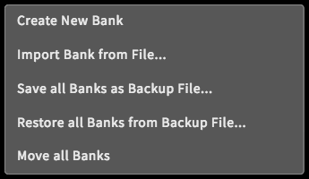The Background context menu appears when right-clicking on the background. Alternatively, a long touch gesture can be used to invoke the menu. The menu provides global functionality such as creating a new bank, importing a bank (from the external device), saving or restoring backups and moving all banks at once.
Preset Context Menu

There are a two ways to invoke the Preset context menu. In the Preset tab, a menu icon is provided for presets. In addition, a right click (or long touch gesture) on a preset (in the Preset tab or in the main area) can also be used. The menu provides preset-specific functionalities such as handling multiple preset selection, an option to show the Preset Info window, a rename option, cut/copy/paste/delete options for selected presets, the compare option and a fast way to change the color tag of selected presets.
Bank Context Menu
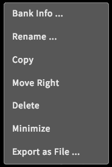The Bank context menu can be invoked by the Bank menu icon in the Preset tab, or by a right click (or long touch gesture) on any bank header (in the Preset tab or in the main area). Depending on where the Bank context menu was invoked, different functionalities will be provided. In general, the following options are provided: create a new bank, import/export a bank (from/to the external device), an option to show the Bank Info window, a rename option, copy/paste/delete options, move left/right options and the minimize/maximize option.
Parameter Context Menus
Finally, some parameters and all parameter group headers also provide a context menu in order to adjust parameter-specific behaviors. Similar to the other context menus, they can be invoked by right-clicking on an element, or by using a long touch gesture.

In the Hardware Sources and Amounts group, the return behavior of pedals and Ribbons can be set.

Macro Controls provide options for renaming, viewing the Parameter Info window (showing their user-definable info text) and resetting (clearing all mappings to target parameters).

Each group header additionally provides local (affecting the specific group) and global (affecting all groups) locking options.

The Parameter context menu provides an option to get the parameter info (by showing the Parameter Info window) or view the parameter in the Parameter tab (if not already visible).
GUI Settings

There are some options concerning only the Graphical User Interface. They are provided in the Setup menu, which can be called via the top right Main menu icon. These settings are not available on the Hardware Interface.
Selection Auto Scroll
Determines if selected items should be automatically scrolled to. Available options are none, parameters, presets and both (presets and parameters).
Edit Parameter
Determines if parameters can be directly adjusted in the main area. Available options are always, if (the parameter is) selected and never. In the Parameter tab, edits are always possible.
Highlight Changed Parameters
Determines, if parameters which have been changed are highlighted by yellow frames.
Context Menus
Determine if context menus are available in the main area. They can be invoked by a right click or a long touch gesture. Available options are on and off.
Preset Drag and Drop
Determine if presets can be moved in the main area by drag and drop gestures. Available options are on and off.
Display Scaling Factor
Should the Graphical User Interface appear too small or big for the device screen resolution, this option can compensate. Available scaling factors are 50%, 75%, 100%, 125% and 150%.
Stripe Brightness
The main area background features a radial arrangement of lines pointing to the center position. They can help keeping track of the current position. Available options are off, 10%, 25% and 50%.
Bitmap Cache
Determines how objects of the Graphical User Interface should be redrawn. Available options are off and on. If the bitmap cache is activated, CPU consumption on the device will decrease, but more RAM will be required. If the cache is deactivated, CPU consumption will rise but RAM usage will decrease. The effect of this setting strongly depends on the external device.
Show Developer Options
There are some more options (beyond the usual interaction with the C15) that are not relevant for the user, but can be important for developers (when testing a device or running diagnostics of possible malfunctions). Therefore, the Developer Options can remain hidden in usual circumstances. If they are displayed, they can be found way above the parameters in the main area. We recommend to simply ignore these options.